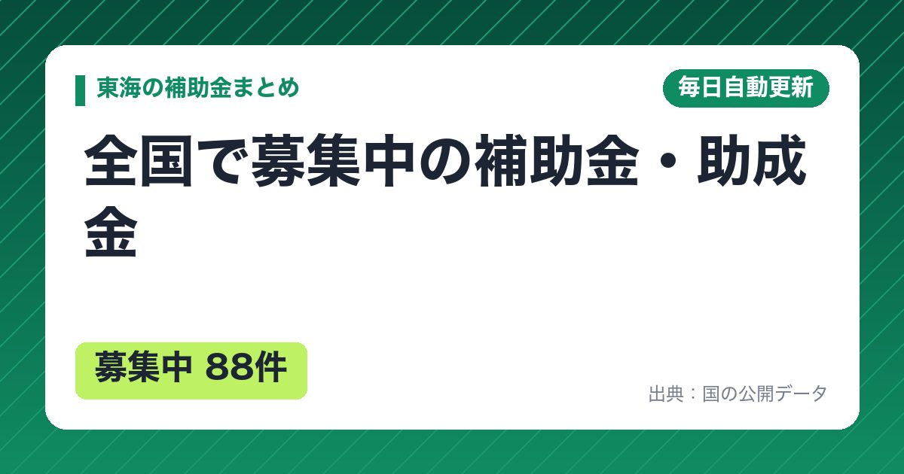

全国で募集中の補助金・助成金まとめ

🔔 締切を見逃さない（無料）：全国の補助金の締切をカレンダーに追加（iPhone・Googleカレンダー。締切の7日前に通知）／新着をRSSで受け取る
⏰ 締切まで7日以内：「太陽光発電導入拡大等技術開発事業」の第3回公募、【農林水産省】中山間地域所得確保推進事業、「ポスト5G情報通信システム基盤強化研究開発事業（社会課題解決に向けた量子コンピュータ次世代機開発・実証の加速）」（g12-2：部素材）の追加公募、【事前着手】令和8年度排出削減が困難な産業におけるエネルギー・製造プロセス転換支援事業（二次公募）（事業Ⅱ/紙パルプ・化学・セメント）、令和8年度排出削減が困難な産業におけるエネルギー・製造プロセス転換支援事業（二次公募）（事業Ⅱ/紙パルプ・化学・セメント）、令和７年度補正 ディマンドリスポンスの拡大に向けたIoT化推進事業、【令和８年度】二酸化炭素排出抑制対策事業費等補助金（地域再エネ水素ステーション保守点検等支援事業）、令和８年度二酸化炭素排出抑制対策事業費等補助金（運輸部門等の脱炭素化に向けた先進的システム社会実装促進事業のうち、農業機械の電動化促進事業）、【令和８年度】働き方改革推進支援助成金、令和8年度 資源循環分野の脱炭素化促進事業、産業車両等の脱炭素化促進事業のうち、空港における脱炭素化促進事業① 空港における再エネ活用型GPU等導入支援（二酸化炭素排出抑制対策事業費等補助金）、産業車両等の脱炭素化促進事業のうち、港湾における脱炭素化促進事業（二酸化炭素排出抑制対策事業費等補助金）、産業車両等の脱炭素化促進事業のうち、空港における脱炭素化促進事業②空港におけるEV・FCV型車両導入事業（二酸化炭素排出抑制対策事業費等補助金）、産業車両等の脱炭素化促進事業のうち、空港における脱炭素化促進事業③空港におけるEV・FCV型車両改造事業（二酸化炭素排出抑制対策事業費等補助金）、成田空港の次代を担う若者の奨学金返還支援事業補助金
今申し込める93件を締切が近い順に表示
広告補助金の申請には決算書・帳簿が必要です。会計ソフト・開業の手続きの例：
・やよいの青色申告オンライン  （個人事業主の確定申告に）
（個人事業主の確定申告に）
・無料の確定申告自動化ソフト マネーフォワード クラウド確定申告  （確定申告をかんたんに）
（確定申告をかんたんに）
・無料の会計自動化ソフト マネーフォワード クラウド会計  （法人・個人の会計を自動化）
（法人・個人の会計を自動化）
・補助金なら、パソコンとセットでお得に導入【freee会計】  （補助金を使う導入プランあり・詳細は公式で）
（補助金を使う導入プランあり・詳細は公式で）
・開業届作成するなら【弥生のかんたん開業届】  （創業補助金の前に個人で開業する方へ）
（創業補助金の前に個人で開業する方へ）
・会社設立を無料で始めるなら【弥生のかんたん会社設立】  （法人を作る方へ）
（法人を作る方へ）
・業界最安級の手数料で法人口座を即日開設！【ラクスルバンク】  （補助金の入金先になる法人口座を作る方へ）
（補助金の入金先になる法人口座を作る方へ）
広告